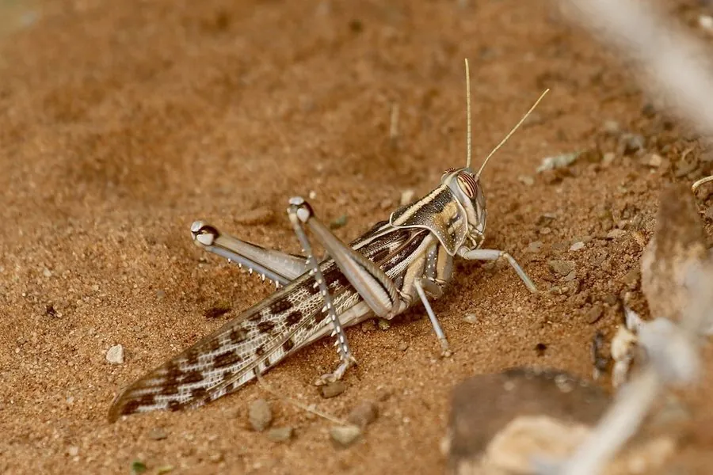

昆虫 · 动物界
沙漠蝗 Schistocerca gregaria

能由散居型转变为群居型的大型蝗虫，成群时可遮天蔽日并跨洲迁飞，取食禾本科作物，是非洲与西亚的农业大害。
- 分类
- 门节肢动物门纲昆虫纲目直翅目科蝗科属沙漠蝗属
- 栖息环境
- 非洲北部、阿拉伯半岛、西亚和南亚的沙漠边缘、半荒漠与绿洲农田
- 地理分布
- 非洲北部、阿拉伯半岛、西亚和南亚的干旱地区
- 保护级别
- 无保护问题；为跨洲迁飞的农业大害，以监测预警和生物制剂防治
物种志
沙漠蝗的体长约五至七厘米，雌虫比雄虫大。散居型个体体色多为黄绿或浅黄，性情温和，活动范围小；当种群密度升高时，它会发生形态和行为上的转变，成为群居型，体色转为黄褐并带黑色斑块，翅更长，飞行肌更发达，性情也变得躁动，喜集群。它的后足腿节粗壮，善跳跃，触角短，复眼发达。
它分布于非洲北部、阿拉伯半岛、西亚和南亚的干旱地区，栖息在沙漠边缘的灌丛、半荒漠和绿洲农田，群居型蝗群可随季风跨洲迁飞，一天的行程可达上百公里。它取食小麦、玉米、高粱、水稻等禾本科作物以及牧草，蝗群所过之处往往颗粒无收。它一年可发生多代，以卵在沙土中越冬，卵块外包泡沫状的卵鞘。防治靠监测预警、昆虫生长调节剂和绿僵菌等生物制剂，目前尚无保护问题。
形态与习性
- 体长约五至七厘米，雌虫大于雄虫
- 散居型体色黄绿或浅黄，性情温和，活动范围小
- 群居型体色黄褐带黑斑，翅长，善飞，喜集群
- 迁飞蝗群可随季风跨洲迁飞，日行上百公里
- 食性取食小麦、玉米、高粱、水稻与牧草
- 越冬以卵在沙土中越冬，卵块外有卵鞘
趣味知识
- 同一只蝗虫能变成两种模样，散居时温和，群居时躁动好飞。
- 最大的蝗群能覆盖几百平方公里，飞过时天都暗下来。
- 它一天能飞上百公里，靠季风把蝗群送到另一个国家。